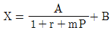
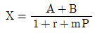
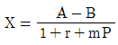
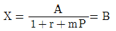

산림기사 (2004-03-07 기출문제)
1과목: 조림학
1. 종자를 건조저장(乾燥貯藏)할 때 가장 적당한 저장 온도는?
- 0℃∼ 10℃
- -2℃ ∼ -5℃
- -5℃ ∼ -10℃
- 10℃ ∼ 15℃
(정답률: 63%)

2. 묘포에서 실생묘 양성을 위해서 일반 품질의 강송 종자를 파종할 때 1m2 당의 파종량의 범위는?
- 5 - 10g
- 10 - 15g
- 20 - 30g
- 40 - 50g
(정답률: 60%)
3. 파종조림이 곤란한 수종은?
- 상수리나무
- 전나무
- 가래나무
- 싸리
(정답률: 40%)
4. 수종간 접목의 친화력(親和力)이 식물계통상 가장 가까운 것은?
- 동종이품종간(同種異品種問)
- 동속이종간(同屬異種問)
- 이속간(異屬問)
- 이과간(異科問)
(정답률: 68%)
5. 강산성 토양에서의 저항력이 가장 강한 수종은?
- 물푸레나무
- 호도나무
- 개암나무
- 소나무
(정답률: 68%)
6. 유령림에 대한 무육에 해당하는 것은?
- 풀베기
- 잡목솎아내기
- 간벌
- 가지치기
(정답률: 72%)
7. 가지치기의 설명 중 가장 옳은 것은?
- 벚나무의 절단면이 잘 유합된다.
- 가지치기 시기는 봄부터 여름까지가 좋다.
- 형질이 좋은 나무를 골라서 우선적으로 가지치기를 한다.
- 임목의 비대생장과 관계가 없다.
(정답률: 81%)
8. 산벌작업의 장점이 아닌 것은?
- 벌채 방법이 개벌작업보다는 복잡하지만 택벌작업보다 간단하다.
- 우량한 임목들을 남김으로서 갱신되는 임분의 유전적 형질을 개량할 수 있다.
- 수령이 거의 비슷하고 줄기가 곧게 자라게 할 수 있다.
- 어린나무가 상하지 않고 비용이 적게 들게 작업할수 있다.
(정답률: 61%)
9. 모수작업에서 종자 공급할 목적으로 남겨놓는 모수의 임목은 벌채 전 전재적의 보통 몇 % 인가?
- 5 ~ 10%
- 30 ~ 40%
- 60 ~ 70%
- 80 ~ 90%
(정답률: 75%)
10. 정량간벌에 쓰이는 밀도관리 곡선 중 좌상에서 우하로 내려오는 직선은?
- 등평균수고선
- 흉고직경선
- 자연간벌선
- 최대밀도곡선
(정답률: 47%)
11. 다음 작업종 중 양수, 음수성 수목에 다같이 가장 보편적으로 사용할 수 있는 작업종은?
- 연속대상개벌
- 대상산벌작업
- 순환택벌작업
- 모수작업
(정답률: 43%)
12. 다음의 무기원소 중에서 수목에 반드시 필요한 필수양료로 볼 수 없으며 과다 시에는 오히려 수목에 해독을 끼치는 원소는?
- 질소(N)
- 망간(Mn)
- 철(Fe)
- 알루미늄(Al)
(정답률: 75%)
13. 해송의 파종상 실면적이 500m2, 묘목잔존본수 600본/m2, 1g당 종자평균입수 66.5립, 순량율 0.95, 실험실발아율 0.90, 묘목잔존율이 0.3일 때 소요면적의 파종상에 대한 파종량은 얼마인가?
- 약 1.76Kg
- 약 17.6Kg
- 약 176Kg
- 약 1760Kg
(정답률: 67%)
14. 나무의 내음성에 대한 설명 중 틀린 것은?
- 수관의 밀도로서 내음성을 판단 할 수도 있다
- 너도밤나무, 주목 등은 음수의 대표적인 수종이다.
- 수령이 어릴 때 내음성이 약하다
- 참나무류는 양수에 속한다.
(정답률: 61%)
15. 다음 중 낙엽, 낙지 등에 의한 임지피복의 효과가 아닌 것은?
- 강우에 의한 표토의 침식과 유실을 막는다
- 토양수분의 증발을 막고 표토의 온도를 조절하여 토양 미생물상을 보호한다
- 임지의 투수성과 보수성을 도와 표토 과습으로 뿌리 발달을 방해한다
- 토양에 유기물을 공급하여 양료를 증가시켜 나무의 자람을 돕는다
(정답률: 82%)
16. 다음 중 배(embryo)가 형성되는 것으로 맞게 설명한 것은?
- 극핵과 정핵이 만나서 형성된다
- 난핵과 정핵이 만나서 형성된다
- 난핵과 조세포가 만나서 이루어진다
- 정핵과 조세포가 만나서 이루어진다
(정답률: 75%)
17. 다음 중 삽목발근이 가장 용이한 수종은?
- 해송
- 잣나무
- 소나무
- 버드나무류
(정답률: 54%)
18. 산벌작업의 일반적인 갱신기간은?
- 5 - 10년
- 10 - 20년
- 20 - 40년
- 40 - 80년
(정답률: 57%)
19. 다음 수목 종자 중 저장 수명이 가장 긴 것은?
- 아카시나무
- 굴참나무
- 삼나무
- 버드나무
(정답률: 54%)
20. 발생 치수 보호에 가장 불리한 작업종은?
- 택벌작업
- 산벌작업
- 군상택벌작업
- 개벌작업
(정답률: 64%)
2과목: 산림보호학
21. 솔나방은 다음 중 무엇으로 월동하는가?
- 유충
- 알
- 번데기
- 성충
(정답률: 52%)
22. 다음은 육묘에 있어서 병의 저항성을 약화시키는 요인들 이다. 맞지 않는 것은?
- 밀식
- 묘의 웃자람
- 일조 부족
- 합리적인 시비
(정답률: 69%)
23. 유해가스가 잎에 침해하는 경로로 가장 옳은 것은?
- 엽맥을 통하여 침입한다.
- 기공을 통하여 침입한다.
- 엽록체를 통하여 침입한다.
- 뿌리털을 통하여 침입한다.
(정답률: 68%)
24. 솔수염하늘소의 설명 중 맞지 않는 것은?
- 소나무재선충을 전파한다
- 유충으로 월동한다
- 성충의 우화시기는 5월하순 - 7월상순이다
- 남부지방에서는 연 2회 발생한다
(정답률: 60%)
25. 질소질 비료 과용과 가장 관계가 깊은 수병은?
- 모잘록병
- 포플러 마루소니 낙엽병
- 향나무 녹병
- 잣나무 털녹병
(정답률: 65%)
26. 솔잎혹파리의 피해가 가장 심한 수종은?
- 소나무
- 리기다소나무
- 낙엽송
- 잣나무
(정답률: 73%)
27. 연해의 검지식물로 적당치 않은 것은?
- 이끼류
- 개여뀌
- 질경이
- 밤나무
(정답률: 29%)
28. 다음의 수종 가운데서 볕데기(皮燒)가 일어나기 쉬운 것은?
- 잣나무
- 이깔나무
- 굴참나무
- 버즘나무
(정답률: 49%)
29. 겨울에 수간의 외층이 터지는 현상을 무엇이라고 하는가?
- 피소현상(皮燒現象)
- 열사현상(熱死現象)
- 상렬현상(霜裂現象)
- 동상현상(凍霜現象)
(정답률: 38%)
30. 약제를 식물체의 뿌리, 줄기, 잎 등에 흡수시켜 깍지벌레와 같은 흡즙성 곤충을 죽게하는 살충제는?
- 기피제
- 침투성살충제
- 소화중독제
- 유인제
(정답률: 71%)
31. 솔나방의 생물학적 방제법으로 경화병균을 산지에 이식할 경우 가장 적당한 시기는?
- 1월
- 4월
- 6월
- 9월
(정답률: 49%)
32. 농약의 남용으로 발생이 조장되는 해충의 가장 대표적인 것은?
- 솔잎혹파리
- 밤나무순혹벌
- 솔나방
- 진딧물
(정답률: 65%)
33. 다음 중에서 나무의 어린 순을 해치는 새는?
- 참새
- 동박새
- 할미새
- 박새
(정답률: 55%)
34. 오리나무 갈색무늬병의 방제법으로 적당하지 않은 방법은?
- 연작을 실시한다.
- 병든 낙엽을 태운다.
- 종자소독을 한다.
- 밀식시에는 솎기를 한다.
(정답률: 67%)
35. 밤나무를 가해하지 않는 해충은?
- 어스렝이나방
- 잣나무 넓적잎벌
- 복숭아명나방
- 집시나방
(정답률: 42%)
36. 아래의 병균 중 잎과 줄기 모두를 침범하는 균은 어느 것인가?
- 포플러 잎녹병균
- 잣나무 잎떨림병균
- 오동나무 탄저병균
- 오리나무 갈색무늬병균
(정답률: 35%)
37. 오동나무 빗자루병의 병원체는?
- 바이러스
- 담자균류
- 자낭균류
- 파이토플라스마(마이코플라스마)
(정답률: 75%)
38. 다음의 대기오염원 중에서 태양광선에 의해 대기 중에서 산화되어 형성되는 것은?
- 아황산가스
- 오존
- 불화수소
- 염소화합물
(정답률: 53%)
39. 중간기주와 기주교대를 하지 않는 병원균은?
- 밤나무줄기마름병균
- 향나무녹병균
- 잣나무털녹병균
- 소나무잎녹병균
(정답률: 49%)
40. 식물 바이러스의 전염에 큰 역할을 하는 곤충의 종류 중 가장 많은 종류는 다음의 어느 과(科)의 곤충인가?
- 진딧물과
- 가루깍지벌레과
- 매미충과
- 메뚜기과
(정답률: 56%)
3과목: 임업경영학
41. 환원가(還元價)에 관한 설명 중 맞는 것은?
- 환원이율이 크면 클수록 수익가격도 증가한다.
- 환원이율이 작으면 작을수록 수익가격은 증가한다.
- 수익만 일정하면 수익가격은 환원이율의 대소에 관계가 없다.
- 수익발생이 없는 물건에 대하여도 수익가격을 구할 수 있다.
(정답률: 44%)
42. 다음 중 산림법상 시업이 제한되는 산림이 아닌 것은?
- 천연보호림
- 자연휴양림
- 수목원
- 분수림
(정답률: 50%)
43. 다음의 임업경영 자산 중 일반적으로 고정자산이라 할 수 없는 것은?
- 임지
- 임업용 사무실
- 산림 축적
- 임도
(정답률: 56%)
44. 평분법의 종류에 대한 설명이 아닌 것은?
- 윤벌기에 대한 벌채안을 만들고 각 분기마다 벌채량을 같게하여 재적수확의 보속을 도모하려는 방법
- 전 산림면적을 윤벌기 연수와 같은 수의 벌구로 나누어 한윤벌기를 거치는 가운데 매년 한벌구씩 벌채하는 방법
- 재적수확의 균등보다는 장소적인 규제를 더 중요시하며 각 분기의 벌채면적을 같게하는 방법
- 법정 임분배치와 재적 보속을 동시에 이루고자 하는 방법
(정답률: 50%)
45. N = Kn + r은 어떠한 표본추출 공식인가?
- 단순림의 추출
- 계통적 추출
- 층화추출
- 부차추출
(정답률: 38%)
46. 우리나라에서 적용되는 있는 경급(徑級)에 있어서 중경목(中徑木)의 흉고직경 범위는?
- 6 - 16㎝
- 18 - 28㎝
- 30 - 40㎝
- 40㎝ 이상
(정답률: 53%)
47. 생산성 원칙을 실현하려면 어느 생장량이 최대인 시기를 벌기로 채택하여야 하는가?
- 총 생장량
- 평균 생장량
- 연년 생장량
- 한계 생장량
(정답률: 54%)
48. 수확표에서 윤벌기 50년일때 벌기수확이 100m3라 하면 이삼림의 법정 축적은 얼마인가? (단, 삼림면적 100ha)
- 3,000m3
- 5,000m3
- 15,000m3
- 20,000m3
(정답률: 57%)
49. 이령림에 있어서 경급 분포도는 어떻게 나타나는가?
- S자형
- 종형(鐘形)
- Sin 곡선
- J자형의 반대곡선
(정답률: 44%)
50. 비용이란 수익을 올리기 위해 실제로 희생된 가치소비액 또는 그 예측액을 말하는데, 산림평가에서 비용이라 할 수 없는 것은?
- 조림비
- 정리비
- 채취비
- 관리비
(정답률: 45%)
51. 공유림의 경영목적 중 잘못된 것은?
- 부재산주에 대한 대리경영을 목적으로 한다.
- 지방재정 수입의 확보를 목적으로 한다.
- 공공의 복리증진을 목적으로 한다.
- 사유림경영에 대한 시범을 목적으로 한다.
(정답률: 50%)
52. 족장목(足場木)과 같은 장재(長材)의 재적을 측정하는데 가장 적합한 구적공식(求績公式)은?
- 후바(Huber) 공식
- 스마리안(Smalian) 공식
- 목재규격법
- 평균직경법
(정답률: 57%)
53. 산림의 공익적 기능을 나타내는 용어로 적절치 못한 것은?
- 사회적 기능
- 비경제적 기능
- 외부경제효과
- 유형적 기능
(정답률: 18%)
54. 임지기망가 계산과 관계가 없는 것은?
- 주벌수확
- 벌채비
- 벌기연수
- 이율
(정답률: 38%)
55. 어떤 물건의 장부원가가 5000000원 인데 폐기시의 잔존가 액이 200000원으로 예상되고 그 내용년수를 10년으로 볼때 정액법에 의한 매년의 감가상각비는 얼마인가?
- 480000(원)
- 500000(원)
- 520000(원)
- 460000(원)
(정답률: 71%)
56. 시장원목 가격을 A, 채취비를 B, 기업이윤 연리를 r, 월이율을 p, 사업기간을 m개월 이라고 하면 입목가(x)를 구하는 공식은?




(정답률: 20%)
57. 임업 경영분석의 주목적은?
- 임목축적을 조사 평가하기 위하여
- 수익성을 조사하기 위하여
- 임업경영의 개선을 위한 자료를 얻기 위하여
- 투입과 산출만을 조사하는 과정이다.
(정답률: 53%)
58. 소나무 2등지의 평균시가를 B, 해당 소나무 임지의 중요 재종의 평균단가를 a, 평가하려는 지구의 지리급 Ⅱ의 소나무 2등지의 중요 재종의 평균단가를 b라면 이때의 소나무 2등지의 임지 가격을 구하는 공식은?
- a/b× B
- b/a× B
- (a-b)B
- (b-a)B
(정답률: 29%)
59. 수관석해시 계산되지 않는 것은?
- 재적
- 평균생장량
- 연년생장량
- 영급별 중량
(정답률: 47%)
60. 지위지수가 14라 할 때 다음 중 가장 관계가 있는 것은?
- 수고
- 직경
- 생장량
- 연령
(정답률: 52%)
4과목: 임도공학
61. 밤나무 식재시 주품종과 수분수의 혼식 비율로 가장 적절한 것은?
- 1:2
- 1:1
- 2:1
- 4:1
(정답률: 33%)
62. 최소곡선 반지름의 크기에 영향을 미치는 인자가 아닌 것은?
- 도로의 길이
- 반출할 목재의 길이
- 차량의 구조
- 시거
(정답률: 28%)
63. 다음 중 개인용 집재기구가 아닌 것은?
- 부시콤바인
- 팀버캐리어
- 파이크폴
- 피카룬
(정답률: 38%)
64. 작업노망(세부노망)에 속하지 않는 임업용 도로는?
- 기간작업로
- 작업로
- 작업임도
- 작업도
(정답률: 24%)
65. 산림법시행규칙에서 정하고 있는 임도의 대피소의 간격으로 옳은 것은?
- 간선임도 500m, 지선임도 500m
- 간선임도 400m, 지선임도 700m
- 간선임도 500m, 지선임도 900m
- 간선임도 600m, 지선임도 1,100m
(정답률: 43%)
66. 다음 중 와이어로프의 안전계수를 구하는 올바른 식은 무엇인가?
- 와이어로프의 절단하중(kg)/와이어로프의 최대장력(kg)
- 와이어로프의 절단하중(kg)/와이어로프의 단위중량(kg)
- 와이어로프의 단위중량(kg)/와이어로프의 최대장력(kg)
- 와이어로프의 최대장력(kg)/와이어로프의 절단하중(kg)
(정답률: 40%)
67. 동계 벌채의 장점이 아닌 것은?
- 목리가 치밀하고 강도가 크다.
- 병충해의 피해가 적고 건조시 할렬이 적다.
- 건축재로서 보존기간이 길다.
- 박피가 쉽고 박피 후 목리가 좋다.
(정답률: 44%)
68. 양송이 재배시에 균상에 복토하는 두께는 재료에 따라 다르나 대체로 몇 ㎝로 하는 것이 가장 알맞은가?
- 2∼3 ㎝
- 4∼5 ㎝
- 6∼7 ㎝
- 8∼9 ㎝
(정답률: 39%)
69. 체인톱을 이용한 작업시 엔진이 가속되지 않는 현상이 발생했다. 예상되는 원인으로 볼 수 없는 것은?
- 기화기의 조절이 잘못되어 있다.
- 점화코일과 연료장치에 결함이 있다.
- 연료내 오일 혼합량이 적다.
- 에어필터가 더럽혀져 있다.
(정답률: 35%)
70. 벌목작업의 능률과 안전을 위하여 작업조직을 편성할 때 2인 1조의 작업조직의 장점이 아닌 것은?
- 수익이 증대된다.
- 책임의식이 줄어들게 된다.
- 작업과정에 대하여 충분히 이해하게 된다.
- 일에 흥미를 지니게 된다.
(정답률: 62%)
71. 표고버섯은 일반적으로 외기온도가 12 - 20℃일 때 발생하는데, 특히 주야간의 온도 차이가 어느 정도일 때 버섯의 발생이 가장 양호한가?
- 2 - 4℃
- 5 - 7℃
- 8 - 10℃
- 15 - 18℃
(정답률: 38%)
72. 설치 지형이나 시설비용이 적으며 잔존 임분에 대한 피해 및 토양 침식의 위험성이 적은 집재방법은 어느 것인가?
- 강선에 의한 집재
- 활로에 의한 집재
- 인력에 의한 집재
- 축력에 의한 집재
(정답률: 60%)
73. 강도율이란 무엇인가?
- 1000 노동시간 중에서 상해로 감소된 노동일수
- 100 노동시간 중에서 상해로 감소된 노동일수
- 100만 노동시간 중에 발생하는 사상 건수
- 10만 노동시간 중 발생하는 사상 건수
(정답률: 39%)
74. 예불기의 사용법에 대한 내용 중 틀린 것은?
- 어깨걸이식은 작업시 원동기부와 톱날부분의 무균형이 맞아야 한다.
- 톱날은 작업전 고정, 균열, 동력전달축 케이스에이상 진동이 없는지 점검 후 작업한다.
- 톱날부분의 안전덮개는 부착한 채로 작업한다.
- 급경사지에서는 위험함으로 경사면의 하향이나 상향 방향으로 작업한다.
(정답률: 46%)
75. 임도밀도가 10m / ha일 때 적정지선의 임도간격은 얼마인가?
- 500m
- 1,000m
- 1,500m
- 2,000m
(정답률: 52%)
76. 반지름이 다른 두 단곡선이 같은 방향으로 연속되는 곡선은?
- 복심곡선
- 단곡선
- 배향곡선
- 반향곡선
(정답률: 44%)
77. 임도개설시 영선의 위치는?
- 절토면의 윗부분에 나타난다.
- 성토면의 아래부분에 나타난다.
- 노반에 나타난다.
- 옆도랑에 나타난다.
(정답률: 37%)
78. 타워야더 집재기가 대형인 경우 집재를 실시할 수 있는 거리는 얼마인가?
- 400m
- 500m
- 600m
- 800m
(정답률: 36%)
79. 와이어 로프의 꼬임에 대해 바르게 설명한 것은?
- 와이어의 꼬임과 스트랜드의 꼬임이 역방향으로 된 것이 랑꼬임이다.
- 보통꼬임은 킹크가 생기기 어렵고 취급이 용이하나 마모되기 쉽다.
- 와이어 로프에서 스트랜드가 왼쪽 방향으로 놓여 있으면 그 로프는 좌꼬임이다.
- 랑꼬임은 보통꼬임의 와이어 로프보다 약하므로 운재삭도의 예인줄에 주로 사용된다.
(정답률: 35%)
80. 원심클러치에 연결되어 회전하면서 체인 톱날을 돌려주는 것은?
- 스프라킷
- 기화기
- 시동장치
- 피스톤
(정답률: 60%)
5과목: 사방공학
81. 야외휴양관리에 있어 환경해설의 역할이 아닌 것은?
- 야외휴양 제공 기관의 목표달성을 위한 중요한 도구이다.
- 환경해설은 이용객의 흥미와 이해를 높여준다.
- 환경해설은 정보와 흥미를 전달하지만 이용객들의 행동을 변화시키지 못한다.
- 환경해설은 휴양정책결정에 있어 대중 참여의 핵이 될 수 있다.
(정답률: 52%)
82. 다음에서 M. Clawson이 분류한 야외휴양의 장소의 3가지 유형에 해당하는 것은?
- 고밀도 휴양지역, 중간형 이용지역, 저밀도 휴양지역
- 자연환경지역, 중간형지역, 이용자중심 지역
- 이용자 중심형 지역, 중간형 지역, 자원 중심형 지역
- 야생형 지역, 중간형지역, 도시형 지역
(정답률: 28%)
83. 자연환경보전법의 용어 정의 중에서 생태계보전지역에 인접한 지역으로서 자연적 또는 인위적 훼손이 생태계보전지역에 미치는 환경상의 영향을 완화시키거나 생태적으로 건전한 관광 등의 이용에 제공하기 위하여 지정하는 것은 무엇인가?
- 자연유보지역
- 생태통로
- 생물자원
- 완충지역
(정답률: 43%)
84. 야외 휴양 관리를 위한 수용력의 개념 구분에 해당되지 않는 것은?
- 생태적 수용력
- 경제적 수용력
- 시설적 수용력
- 물리적 수용력
(정답률: 43%)
85. 다음은 휴양림의 조성 또는 관리· 운영을 위탁받을 수 있는 기관들이다. 아닌 것은?
- 산림조합 중앙회
- 산림사업을 주업으로 하는 법인
- 시· 도지사
- 농림부령이 정하는 자로 구성된 단체
(정답률: 46%)
86. 휴양마케팅의 4요소(4ps)로 구성된 것은?
- product, price, people, promotion
- product, price, place, promotion
- product, price, position, promotion
- product, price, power, promotion
(정답률: 45%)
87. 휴양림 안에 설치할 수 있는 주차장은 어떠한 시설의 종류에 속한다고 할 수 있는가?
- 위생시설
- 편익시설
- 임업체험시설
- 교육시설
(정답률: 48%)
88. 자연학습을 위한 관찰로를 설치하는데 입지여건으로 좋지 못한 것은?
- 자연과의 연계성이 확보된 곳
- 접근이 용이한 곳
- 환경적으로 민감한 장소
- 지형 여건을 고려한 노선에 의한 곳
(정답률: 63%)
89. 야외 휴양관리의 대안 선택 과정에서 고려해야 할 사항에 대한 기술 중 가장 거리가 먼 것은?
- 각 개념이 그 지역의 이용객에게 미칠 잠재적인 영향
- 각 개념이 적용됨으로써 발생할 자연 자원 혹은 사회적 가치의 감소 및 증가
- 관리자의 가치 판단 배제
- 각 개념이 적용될 때 관리적인 난이도
(정답률: 60%)
90. 미국의 국립공원의 관리조직의 최소 단위에서 요구하는 관리요원에 해당하는 것은?
- 소장, 관리직, 경리직, 안내원, 산림감시원,
- 소장, 경리직, 안내원, 전문직원, 작업원
- 소장, 안내원, 사무직원, 작업원, 일용직원
- 소장, 관리직, 안내원, 사무직원, 작업원
(정답률: 66%)
91. 산림휴양시설 운영을 위해서는 입장료 및 시설사용료 등을 부과하고 있다. 조성주체에 따라 세부적인 징수기준은 다르지만 휴양림의 입장료 및 시설사용료는 해당시설의 설치에 소요된 비용과 그 유지· 관리비용을 참작하여 적정하게 정하여야 한다. 다음 중 입장료를 징수하지 않는자 중 맞지 않는 것은?
- 공무수행을 위하여 출입하는 자
- 국가유공자 및 장애인
- 10세 이하인 자 및 60세 이상인 자
- 외교사절 및 그 수행자
(정답률: 36%)
92. 야영참가인이 4,000명, 야영 참가 가구수가 1,000가구, 야영회수가 3회, 그리고 평균 숙박일수가 3일인 경우에 야영수요는?
- 3,000인/일
- 9,000인/일
- 12,000인/일
- 36,000인/일
(정답률: 35%)
93. 휴양 이용의 집중 요인과 거리가 먼 것은?
- 시설의 분산성
- 장소 매력성
- 가장자리 선호성
- 안전 편리성
(정답률: 40%)
94. 조경시설의 일반적인 유지관리의 원칙에 해당하는 것만으로 묶여 있는 것은?
- 친환경성, 편의성, 보습성
- 안전성, 경관성, 청결성
- 쾌적성, 배수성, 경제성
- 배수성, 내구성, 다양성
(정답률: 42%)
95. 자연휴양림 개발방침을 결정할 때 기본적으로 분석해야할 내용이 아닌 것은?
- 자원분석
- 요인분석
- 시장분석
- 이용자분석
(정답률: 40%)
96. 레크리에이션 공간 관리의 기본전략과 거리가 먼 것은?
- 완전 폐쇄
- 계속적인 개방, 이용상태 하에서 육성관리
- 폐쇄 후 자연회복형
- 순환식 개방에 의한 휴식기간 확보
(정답률: 63%)
97. 다음 중 자연휴양림내 체육시설은?
- 민속씨름장
- 산책로
- 산림욕장
- 자연관찰원
(정답률: 46%)
98. 자연휴양림의 휴양시설 기준 중 틀린 것은?
- 야영장은 하천으로부터 10m 이상의 거리를 둘 것
- 산책로와 자연탐방로의 노폭은 3m 내외로 할 것
- 숲 속 수련장은 30명 이상을 동시에 수용할 수 있는 규모로 할 것
- 숲 속의 집은 자연재해의 위험이 없고 일조량이 많은 지역에 배치할 것
(정답률: 30%)
99. 좋은 시설의 유지관리는 이용객의 만족 및 휴양경험의 질에 크게 영향을 준다. 다음의 시설물별로 충족시킬 수 있는 행위가 바르게 짝지어 놓은 것은?
- 전망대 - 고적감이라는 휴양 경험
- 방문객센터 - 자연환경 지식의 습득
- 등산로 - 사회적 유대강화 경험
- 피크닉장 - 아름다운 경관 감상
(정답률: 15%)
100. 매슬로(Maslow)가 말한 인간의 욕구단계 순서 과정이 바른 것은?
- 생리적 욕구-안전 욕구-사회적 욕구-자존감욕구-자아실현 욕구
- 생리적 욕구-사회적 욕구-안전 욕구-자존감욕구-자아실현 욕구
- 안전욕구-생리적 욕구-사회적 욕구-자존감욕구-자아실현 욕구
- 안전욕구-생리적 욕구-자존감욕구-사회적욕구-자아실현 욕구
(정답률: 57%)